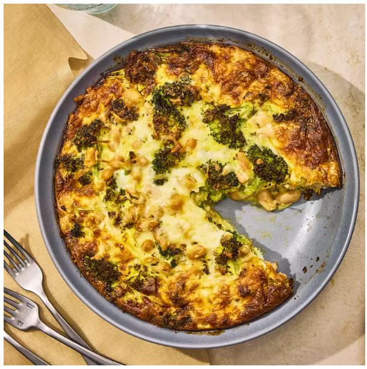
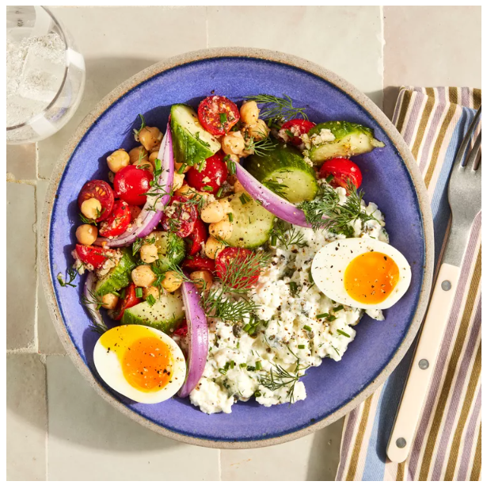

Broccoli White Bean & Cheese Quiche
Roasted broccoli, creamy cannellini beans, and rosemary baked into a golden egg quiche with fontina and Parmesan. Hearty, savory, and satisfying.
Chickpea & Sweet Potato Grain Bowls
Roasted sweet potatoes and crispy chickpeas over farro or sorghum, topped with greens, avocado, feta, and a creamy lemon-tahini yogurt dressing. Nourishing and full of flavor.
Pasta alla Puttanesca with Tuna
A bold, briny mix of cherry tomatoes, olives, capers, anchovies, and canned tuna tossed with pasta and a hint of chili. Classic comfort with a punch.
High-Protein Cottage Cheese Bowl
Cottage cheese blended with herbs and capers, topped with marinated veggies, chickpeas, and soft-cooked eggs. Finished with olive oil and fresh chives.
Grilled Vegetable Couscous Salad
Israeli couscous with grilled zucchini, squash, peppers, mushrooms, and red onion—served with sliced chicken breast and optional Greek dressing. Warm, hearty, and full of flavor.
